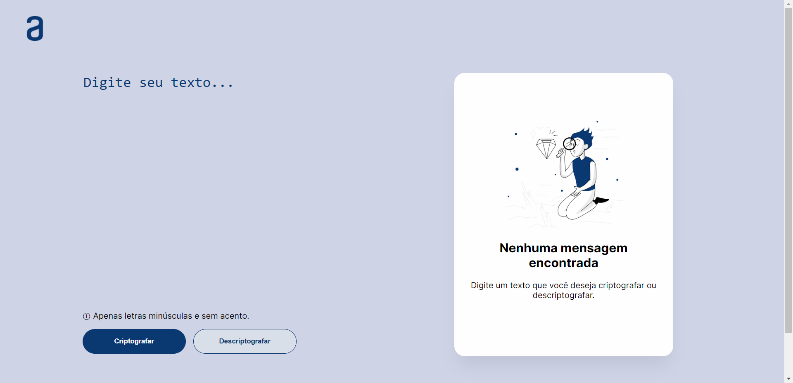

# Encriptador de Texto da Alura em React

> Aqui temos um encriptador de texto que consegue criptografar e descriptografar uma mensagem. Perfeito para mandar mensagens confidenciais!
:)
### Ajustes e melhorias
O projeto ainda está em desenvolvimento e as próximas atualizações serão voltadas nas seguintes tarefas:
- [ ] Criação de um modo noturno
- [ ] Possibilidade de interpretar letras com acentos
- [ ] Possibilidade de troca de idiomas entre 🇧🇷/🇺🇸
## 📑 Pré-requisitos
Antes de começar, verifique se você atendeu aos seguintes requisitos:
* Você instalou a versão mais recente do `Windows 10 / Windows 11`;
* Você instalou o `Node.js`;
Caso não possua o Node, instale através desse link: [Instale o Node](https://nodejs.org/en/);
## 📥 Clonando o repositório
Para clonar o repositório e utilizá-lo na sua máquina, siga estas etapas:
* Copie o link do repositório;
* Crie uma pasta que receberá o repositório;
* Abra o Git Bash na pasta criada;
* Utilize o comando `git clone https://github.com/LucasTMB/encriptador-de-texto-react.git`;
* Acesse a pasta do repositório;
* Pronto, agora é só usar!
## 🚀 Rodando o projeto
Primeiramente, abra o terminal dentro do projeto e use o comando `npm install`. Esse comando permitirá a instalação do `node_modules`, com todas as dependências necessárias para o funcionamento do Node e do React.
### No diretório do projeto, você pode executar:
```
npm start
```
> Executa o aplicativo no modo de desenvolvimento. Abra [http://localhost:3000](http://localhost:3000) para visualizar em seu navegador.
```
npm test
```
> Inicia o executor de teste no modo de observação interativo. Consulte a seção sobre [execução de testes](https://facebook.github.io/create-react-app/docs/running-tests) para obter mais informações.
## 💻 Como usar a aplicação
* Insira o texto que você deseja criptografar/descriptografar no input à esquerda;
* Aperte um dos botões abaixo, realizando a ação que você deseja;
* O texto criptografado/descriptografado aparecerá à direita;
* Você pode copiar o texto clicando no botão abaixo;
* É possível reiniciar a página clicando no logo da Alura, na parte superior esquerda da tela.
## 🤳 Como me achar